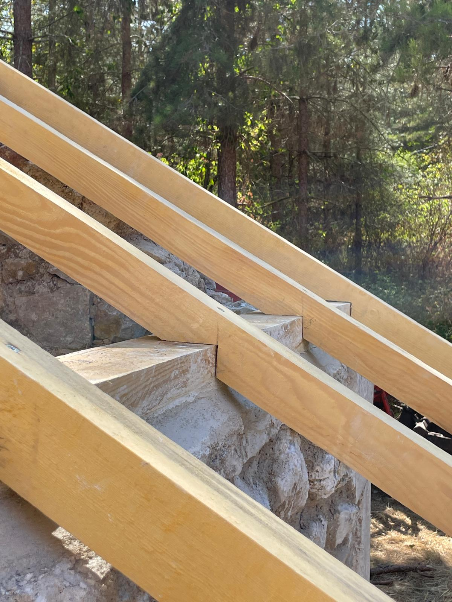
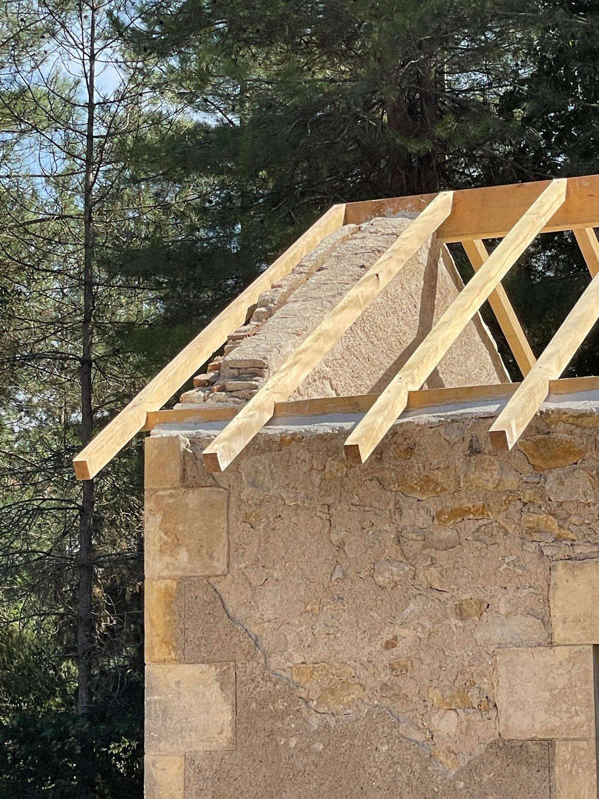
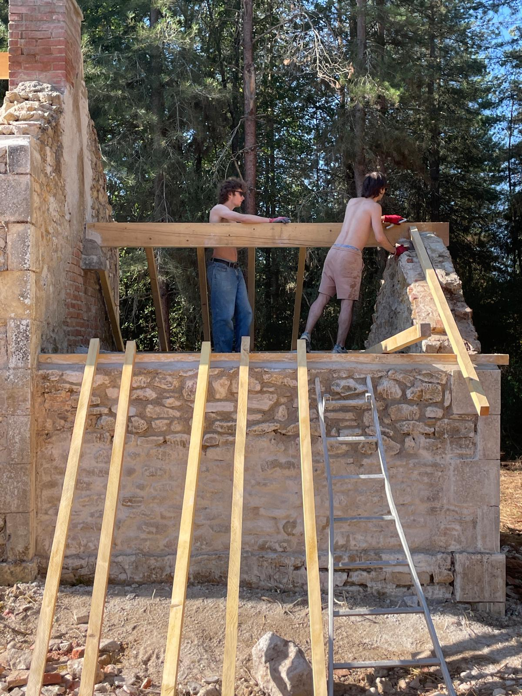
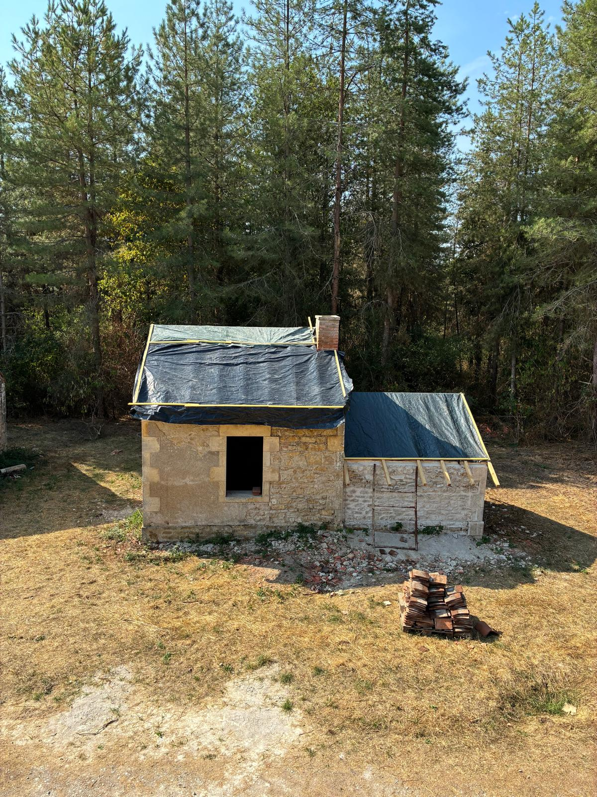
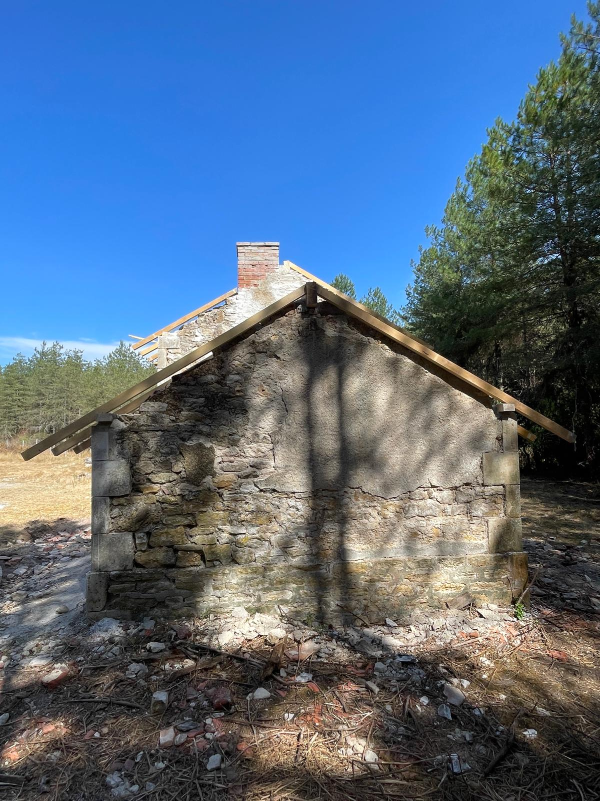

Au cœur d’un massif boisé, une petite clairière abrite une maisonnette et son four à pain, tous deux décrépis et détériorés par le temps.
Pour redonner vie à ce lieu, un chantier participatif a été organisé selon une suite logique d’étapes : la maçonnerie a d’abord permis de redresser les murs en pierres et mortier de chaux jusqu’à leur arase, puis une petite mezzanine a été aménagée au-dessus du four, avant de couronner l’ensemble par la pose d’une nouvelle toiture.





